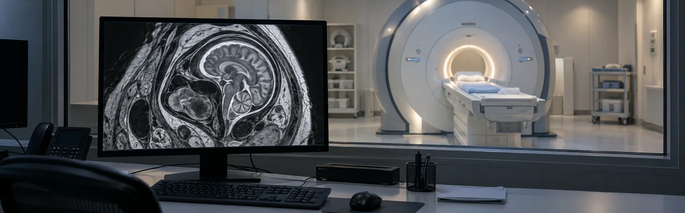
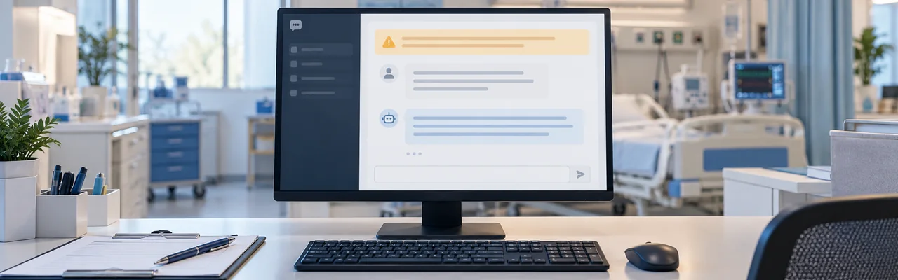

Forskere ved MIT, i samarbeid med Boston Children's Hospital og Inria, bygde en modell kalt E(3)-Pose som bygger den fysiske symmetrien til et fosterhode rett inn i arkitekturen, i stedet for å stole på at nettverket lærer den selv fra data. Det gjør at modellen kan korrigere for bevegelse i MR-skanninger av fosterhjernen og gi radiologer et skarpt, høyoppløst bilde uten å måtte kalle familien inn til en ny skanning. Arbeidet ble presentert på den europeiske datasynskonferansen ECCV 2026.
Kilde: news.mit.edu →Forskere ved Harvard Medical School, Brigham and Women's Hospital og Mass General Brigham gikk gjennom to og et halvt år med brukerdata fra OpenEvidence, det kliniske AI-søkeverktøyet rundt 950 000 amerikanske klinikere nå bruker, og fant at legene spør det om behandlingsvalg mer enn dobbelt så ofte som om diagnose. Det er et sjeldent, direkte innblikk i hvordan AI faktisk er vevd inn i den daglige medisinske praksisen og ikke bare en labdemonstrasjon. Sykepleiere med utvidet kompetanse er de ivrigste brukerne av alle.
Kilde: healthcareitnews.com →
Forskere ved Mount Sinai testet 20 store språkmodeller gjennom 501 varianter av 50 ekte kliniske scenarioer, og fant at det holdt å legge til en kort sikkerhetspåminnelse i prompten for å kutte andelen potensielt skadelige svar fra 16,6 % til 10,1 %. Forbedringen gjaldt for 19 av de 20 modellene. Forskeren bak studien var tydelig på at dette er ett billig, reelt sikkerhetslag å legge på toppen av klinisk tilsyn, ikke en løsning på AI sine dypere begrensninger.
Kilde: mountsinai.org →